FD Macro Generator Tool Guide
This guide explains every visible button and control in the non-Macro Generator tabs. All screenshots were captured from the running application, not recreated as mockups.
The Macro Generator tab is intentionally excluded. Covered tabs: Price Lookup, Funding Macro, Position History Open & Close Price Calc., and Margin Restrictions.
YYYY-MM-DD HH:MM:SS.Shared Header
These controls appear above every tab. The screenshot below uses the Price Lookup tab as the example.
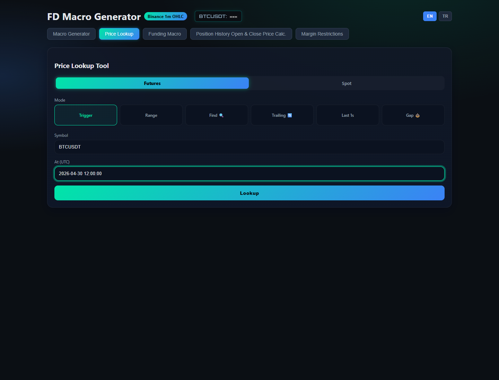
1 2 3Price Lookup - What It Does
Price Lookup is the investigation tab. It pulls public Binance market data and turns it into support-friendly evidence. Use it when a customer asks whether a trigger was reached, why a trailing stop did or did not trigger, or why Mark Price and Last Price behaved differently.
- Select market. Use Futures when the order belongs to Futures. Use Spot only for spot-market checks. Futures can compare both Mark Price and Last Price.
- Select a mode. Trigger, Range, Find, Trailing, Last 1s, and Gap each answer a different investigation question.
- Enter symbol and UTC time fields. The symbol is shared with the live ticker, and all timestamps must be UTC.
- Pick mode-specific options. Examples: Target Price, Last/Mark radio buttons, Long/Short direction, Activation Price, Callback Rate, or trigger type.
- Click Lookup. The result appears in a textarea that can be copied into the agent workflow.
Trigger Mode
BTCUSDT.Range Mode
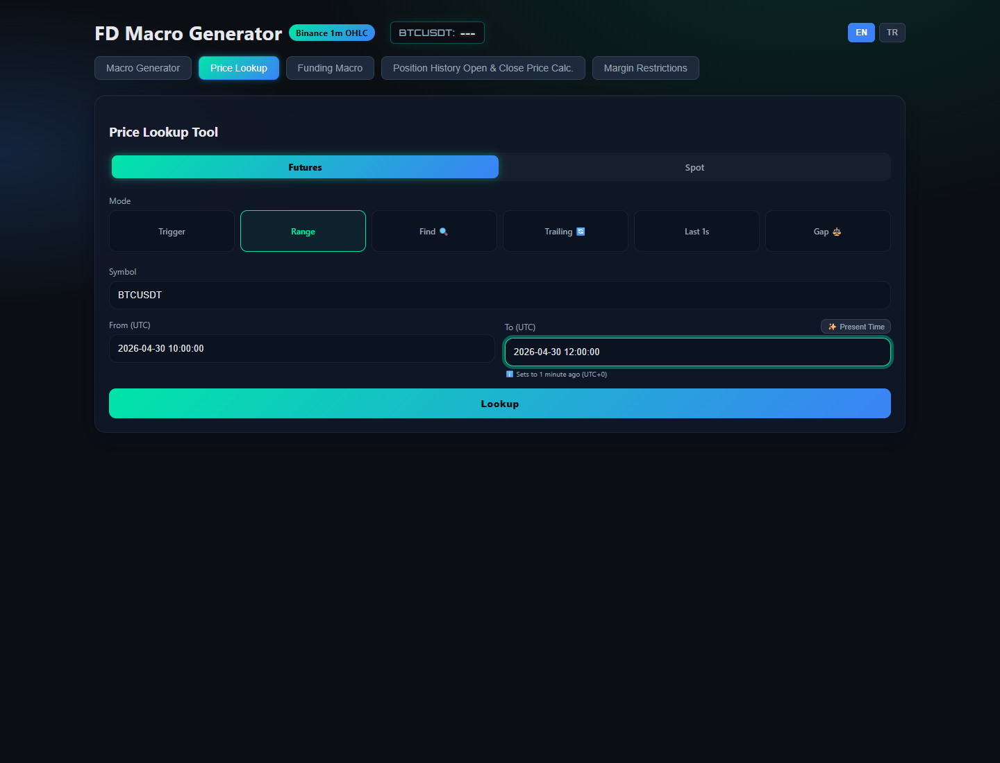
1 2 3 4 5Find Mode
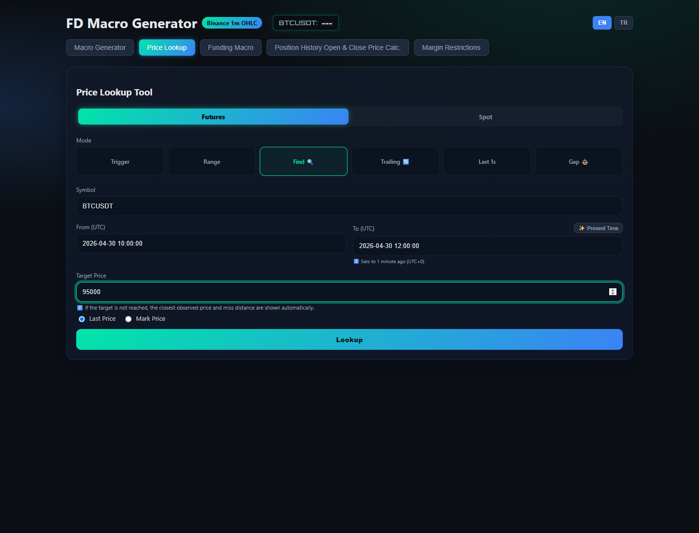
1 2 3 4Trailing Mode
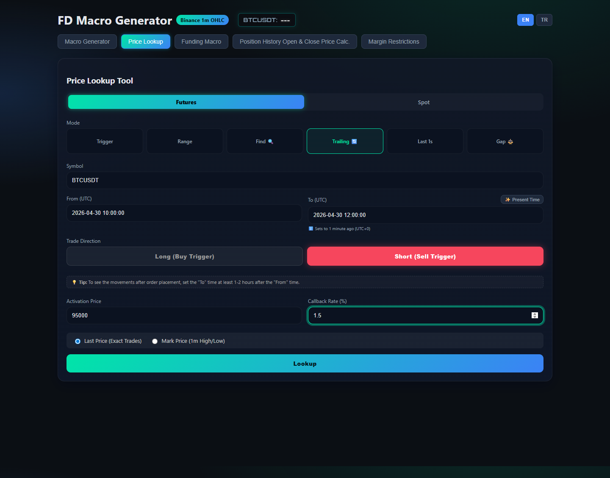
1 2 3 4 5 6 7Last 1s and Gap Modes
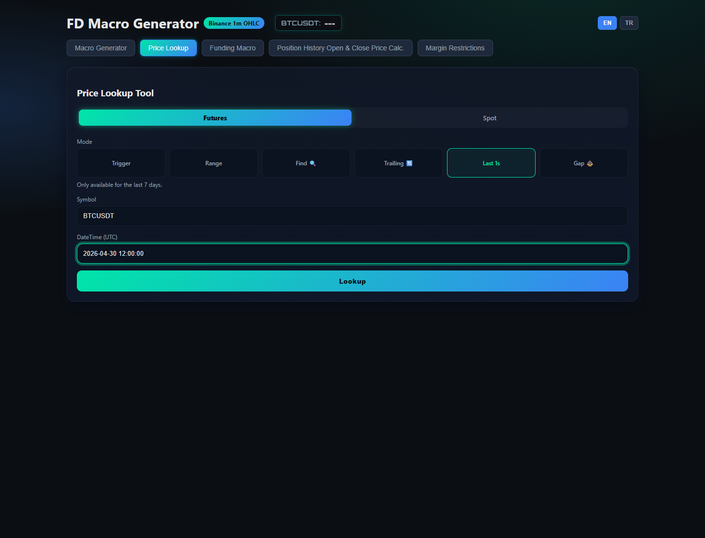
1 2 3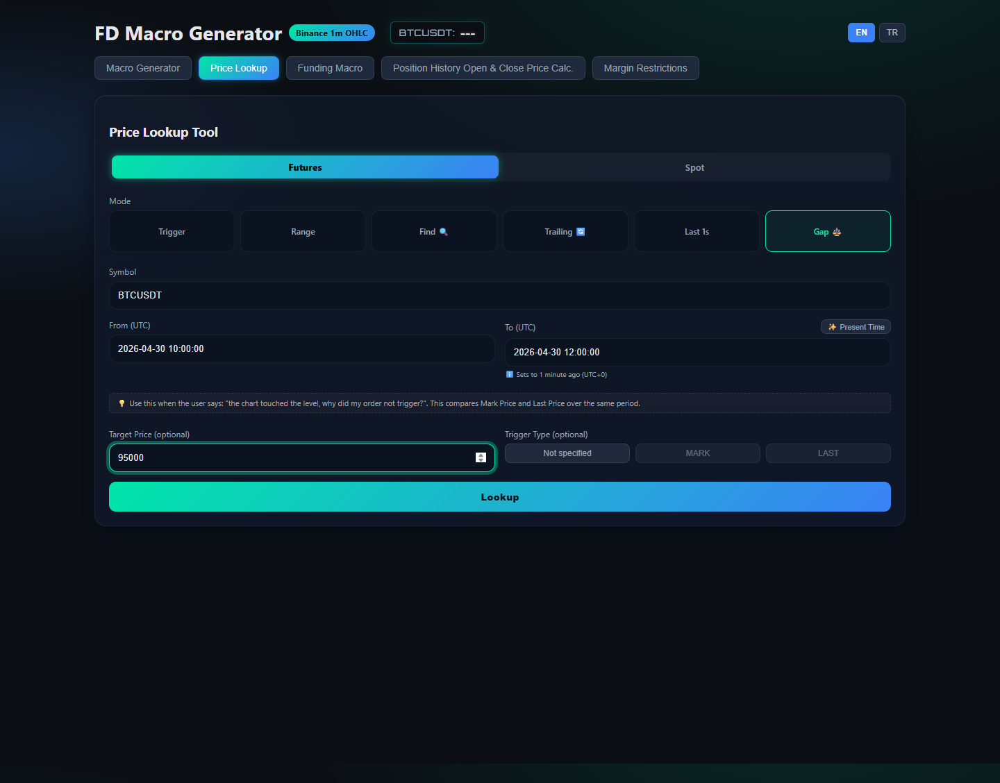
1 2 3 4The target price was not reached by Mark Price during the selected period. The closest observed Mark Price was 94,980 at 2026-04-30 11:24:00 UTC, which remained 20 USDT away from the target.
The order activated at 10:18:00 UTC. After activation, the highest Last Price was 95,200. With a 1.5% callback, price needed to pull back to 93,772. It only pulled back 0.8%, so the trailing stop did not trigger.
Funding Macro
Funding Macro builds a customer-ready explanation from funding time, position size, side, interval, output mode, and tone.
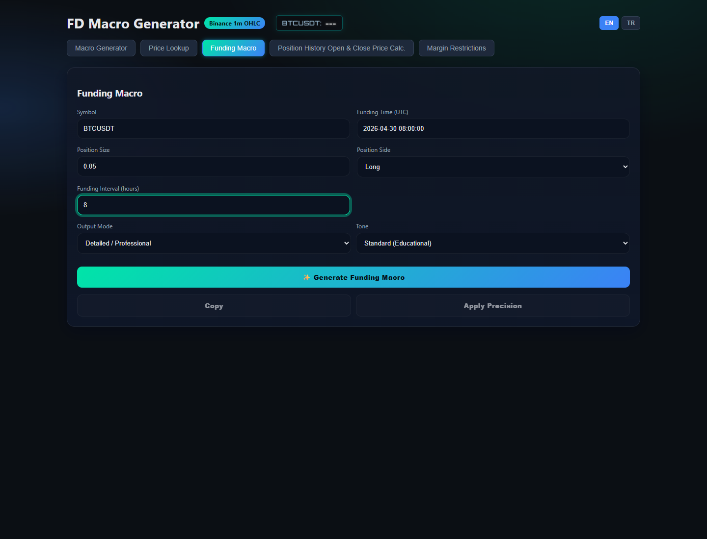
1 2 3 4 5 6 7 8 9 10BTCUSDT.At the selected funding time, the funding rate was applied to the notional value of the position. Based on the customer's Long side and position size, this explains why the funding fee was charged or credited.
Position History Open & Close Price Calc.
This tab parses Binance order history rows and generates average entry and close explanations for support replies.
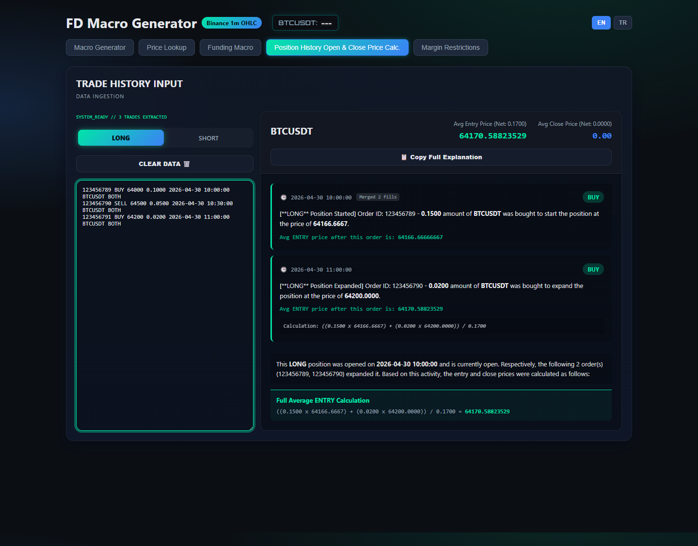
1 2 3 4 5 6 7The LONG position started with order 123456789 and was expanded by order 123456790. The average entry was calculated as ((0.1500 x 64166.6667) + (0.0200 x 64200.0000)) / 0.1700 = 64170.58823529.
Margin Restrictions
This tab checks Binance Margin restriction data from GET /sapi/v1/margin/restricted-asset. It is designed so agents do not need to provide an API key manually. The app uses the configured shared/default key path, and agents should simply refresh or search the asset.
openLongRestrictedAsset means Binance Margin Buy (Long) Risk Control is active. Users may be blocked from opening or increasing long positions, while close position and repay flows remain allowed. maxCollateralExceededAsset means the platform-wide collateral cap is reached, so additional transfers into cross margin as collateral can be blocked.Restriction Check
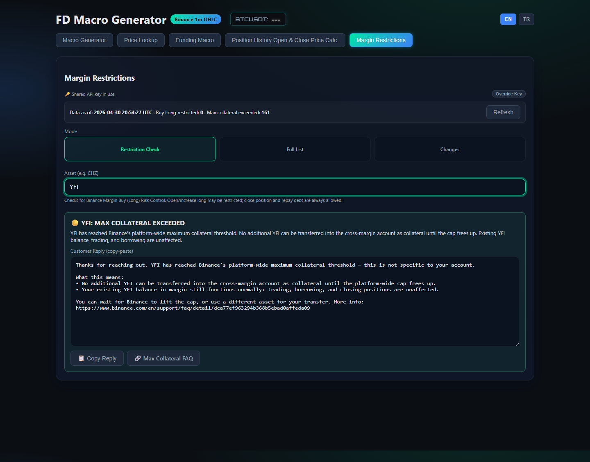
1 2 3 4 5 6 7 8 9 10YFI, CHZ, or ADA.Full List and Changes
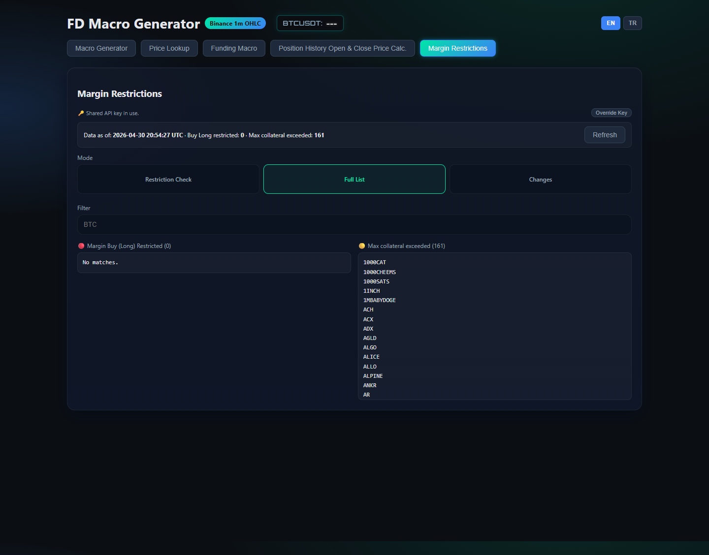
1 2 3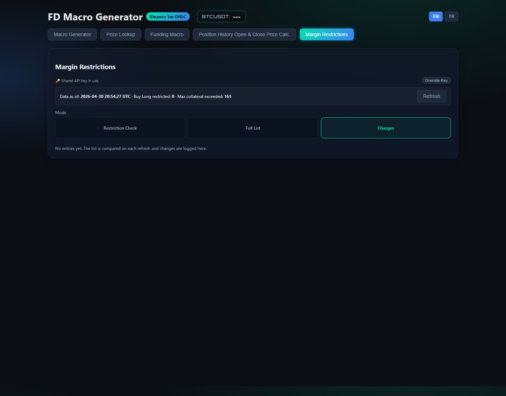
1 2YFI has reached Binance's platform-wide maximum collateral threshold. No additional YFI can be transferred into cross margin as collateral until the cap frees up. Existing YFI balance, trading, and borrowing are unaffected.
Maximum Collateral Limit for Margin Assets: https://www.binance.com/en/support/faq/detail/dca77ef963294b368b5ebad0affeda09 Binance Cross Margin Trading Risk Control: https://www.binance.com/en/support/faq/detail/b83f0a71a1b448aaaad5e970a9936472